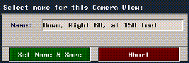
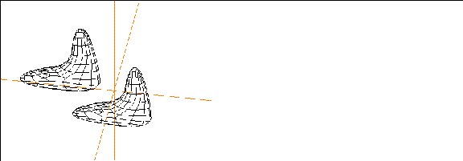

[N-World Contents] [Book Contents] [Prev] [Next] [Index]
N-Geometry Basics
In this chapter you'll learn some of the basic concepts you'll need to work in N-Geometry.
In this Chapter
You'll learn about:
Global 3D Space
N-Geometry is a 3D modeler-the objects you create can have height, width, and depth. In order to make it easier for you to tell "which way is up," N-Geometry uses a Cartesian coordinate system, similar to the one you may have learned about in high-school algebra. To find our way around, we use a set of global axes, which look something like this:
Figure 1.1 The global coordinate system
In N-Geometry this coordinate system is "right-handed;" positive y represents "up," positive x is "right," and positive z is "forward."
- Note. Typically, you create objects with a +z orientation; that is, they should face forward. Both the Skeletal Animation System and N-Dynamics are easiest to use if you begin any object with this orientation.
Local 3D Space
While this global coordinate system is always in effect, it is possible for objects you create to have their own x, y, and z axes. Such coordinate systems are referred to as local coordinate systems.
Local coordinate systems can have a different origin and their axes can point in different directions than the global coordinate system. Local coordinate systems can also be non-Cartesian.The number of local coordinate systems is unlimited.
Adding New Objects
There are a number of ways to add new objects in N-Geometry. You may build an object from scratch, read it in, or use any of the other techniques described below.
"Virtual Clay"
How do you start modeling in N-Geometry?
Typically, you'll add a primitive object (such as a cube or a
cylinder), then start pulling out faces on that object, adding and moving vertices, segments, and faces until your object looks right. It may help to think of the primitive as a piece of "virtual clay," clay that can be infinitely stretched, shrunk, and divided from the same piece of material.
Adding Objects
The GeoMenus>File menu contains commands for creating new objects, reading in objects, and saving and exporting objects.
Figure 1.2 Adding objects to N-Geometry
To add a new object:
1. (CLICK-L) on GeoMenus>File>New Object.
- The following menu is displayed:
Figure 1.3 Adding a primitive
Each primitive is described in more detail in the N-Geometry Reference Guide.
Selecting Objects and their Elements
The element sensitivity menu stretches across the top of the N-Geometry window:
Figure 1.4 The element sensitivity menu
You use the element sensitivity menu to select the type of element you want to edit.
collect
This is used in conjunction with points, segments, faces, bodies, and objects to form collections of that element type.
none
A quick way to deselect any currently selected elements and exit from collect mode (if you're in it).
points, segments, faces, bodies, and objects
Specify which element type you want to work with. For example, if you want to modify a face, (CLICK-L) on faces.
Highlighting vs. Selecting
Highlighting lets you see which element will be selected if you click the mouse. To "highlight" an element:
1. Select the type of element you want to work with on the element sensitivity menu.
2. Move the mouse over an object in the N-Geometry window.
- As you move the mouse over an object in the scene, elements of the specified type are highlighted. As you move over each element, its corresponding serial number (or bone name if the object is a skeleton) is displayed in the upper left corner of the N-Geometry window:
Figure 1.5 Highlighting an element
- This is the element's serial number, and can be of use to users who want to identify a selected element.
Selecting an element, on the other hand, is what you do when you want to work with it. To select an element:
1. Select the type of element you want to modify on the element sensitivity menu.
2. Move the mouse over the N-Geometry window until the element you want to modify is highlighted.
3. (CLICK-L) on the element.
- Selecting an element displays extra information in the upper left corner of the N-Geometry window, such as the midpoint of an object, or, in the case of a bone, things like its length and rotation order):
Figure 1.6 Selecting an element
- Note that the color of the element changes, to indicate that it has been selected-this means that operations you select will be applied to this element.
Bodies vs. Objects
As described in more detail in the N-Geometry Reference Guide, there are two parts to an N-Geometry object:
It is easy to initialize (reset) the transformation matrix to undo any changes made to an object. Changes made to a body, however, can only be done by subsequent "opposite" changes.
Working with Objects
To see a list of operations that you can perform on an object:
1. (CLICK-L) on objects in the element sensitivity menu.
- When you move the mouse over an object in the N-Geometry window, a bounding box is displayed around the entire object and a set of axes are displayed around the object's origin.
Figure 1.7 Selecting an object
If you (SHIFT-L) on an object, a list of operations that can be performed on the object is displayed:

Figure 1.8 Object operations (flip menu)
Operations performed on an object are sometimes referred to collectively as transformations. All of these operations are described in more detail in the N-Geometry Reference Guide.
Let's create an object and transform it:
1. (CLICK-L) on GeoMenus>File>New Object>Cube.
2. (CLICK-L) on objects in the element sensitivity menu.
3. (SHIFT-L) on the cube, then (CLICK-L) on Axis Move>X.
- Move the cube back and forth along the global x axis. Note that the object's center (shown by the local axes) moves too.

Figure 1.9 Move the cube object along the X axis
4. (SHIFT-L) on the cube, then (CLICK-L) on Home.
- The cube "snaps back" to the global origin.
Figure 1.10 Use the Home command to reset the cube to its default position
5. Transform the object along the X axis again.
6. (SHIFT-L) on the cube, then (CLICK-L) on Set Home.
- This makes the cube object's current position its default, or "Home" position.
7. (SHIFT-L) on the cube, then (CLICK-L) on Home again.
- This time, the cube stays in its new home.
If you were to animate this object, any animation would be based on this new position.
The Set Home Command
The Set Home command makes the object's current position (as defined by its transformation matrix) its "home" position.
To use Set Home on an object:
1. (CLICK-L) on objects in the element sensitivity menu.
2. (SHIFT-L) on the object.
3. (CLICK-L) on Initialize.
- The object returns to the last defined home position.
4. (CLICK-R) on the object to initialize the object to its default transformation matrix.
- If you do this, then use Home on the object, the object's home position is cleared to the default-aligned with the global origin.
The Apply Transformation Command
The Apply Transformation command clears the object's transformation matrix without changing the apparent position of the object. (The effect is if you had modified the body to be in its current location.)
Try this:
1. Create a cube.
2. (CLICK-L) on objects in the element sensitivity menu.
3. (SHIFT-L) on the cube.
4. (CLICK-L) on Axis Move>X.
- Move the cube to the right.
5. (SHIFT-L) on the cube.
6. (CLICK-L) on Apply Transformation.
- Note that the body stays in its new position, but that the transformation matrix is cleared to its default home position.
Working with Bodies
Modifications are the operations you normally associate with "sculpting" a model-pulling out faces, cutting segments, and so forth to get the "shape" of the object correct.
Try this:
1. (CLICK-L) on GeoMenus>File>New Object>Cube.
2. (CLICK-L) on bodies in the element sensitivity menu.
3. (SHIFT-L) on the cube.
4. (CLICK-L) on Axis Move, then (CLICK-L) on X.
- Drag the cube to the right; note that this time, the transformation matrix is not updated, since you are only modifying the body of the object, not its transformation matrix.
Figure 1.11 Modifying a cube
Two complete chapters are devoted to working with objects and working with bodies in the N-Geometry Reference Guide. Before setting up for a project, we recommend familiarizing yourself with the information in that guide.
Viewing Objects
How do you view objects?
Firstly, you look at everything through a camera. The camera is an object, which you can move around like any other object-however, you're always standing behind it, looking through its eyepiece.
You can also change the viewing characteristics of individual objects in the scene, shading them, displaying their normals, making them invisible, and so forth.
The Camera
The camera is an object that can be moved around in 3D space. You can zoom, rotate, or translate the camera to change your view.
The various camera modes are described in detail in the N-Geometry Reference Guide.
Views
You can save the current camera position as a "view." Views are useful if you want to:
To Save a View
1. Move the camera to a position you want to save.
- To move the camera, (CLICK-M) on the N-Geometry window and move the mouse. When the camera is in the position you want to view an object from, (CLICK-L) to stop the camera's movement.
- There are a number of camera motion modes, described in the N-Geometry Reference Guide.
2. (CLICK-M) on GeoMenus>Camera>Views.
3. Enter a name for the camera view in the dialog box that appears:

Figure 1.12 Saving a view
- The default name for the camera view gives a detailed, geometric description of its position; you can substitute a different name for the view if you want.
4. (CLICK-L) on Set Name & Save.
To Go to a Saved View
1. (CLICK-L) on GeoMenus>Camera>Views.
- A menu with several options appears:
Figure 1.13 Selecting a view
View Hot Keys
There are six hot keys for the saved camera views:
Table 1.1 Camera hot keys
|
Hot Key
|
Camera Position (in X, Y, Z order)
|
|---|
|
X
|
85, 0, 0
|
|
Y
|
0, 85, 0
|
|
Z
|
0, 0, 85
|
|
(CTRL-X)
|
-85, 0, 0
|
|
(CTRL-Y)
|
0, -85, 0
|
|
(CTRL-Z)
|
0, 0, -85
|
For all these views, the camera is pointed at the global origin
(0, 0, 0). The point at which the camera is aimed is called its aimpoint.
Orthographic vs. Perspective Display
When viewing scenes in N-Geometry, you can toggle between perspective and orthographic views. An orthographic view attempts to display the true dimensions of an object (regardless of perspective) while a perspective view simulates how an object would appear in the real world.
Figure 1.14 Orthographic vs. perspective views of the same object
To toggle between orthographic and perspective viewing modes, use the (SHIFT-O) hot key.
- Note. Because orthographic viewing is based on the camera, toggling between the orthographic and perspective viewing modes affects all objects in the scene.
- Note. Toggling display modes does not change the actual geometry of an object; only its display characteristics are affected.
Display Features
You have quite a bit of control over the way objects are displayed in N-Geometry. Some of the characteristics that can be set for each object include those listed below.
All of these characteristics are either on or off. To change the shading of an object, for example:
1. (CLICK-L) on objects in the element sensitivity menu.
2. (SHIFT-L) on the object.
3. (CLICK-L) on Shading.

Figure 1.15 Select the object you want to change
To toggle the display parameters for several objects, either collect them and the (SHIFT-L) on the collection, or (CLICK-R) on GeoMenus>Object Display>Shading (for example) and select the objects whose display parameters you want to modify.
Visibility
Controls whether the object is displayed or not (assuming the object is in the camera's field of view). For example, you might make certain objects temporarily invisible to unclutter your viewing area.
Backfacing
Determines whether backfacing control is applied to the object. If backfacing is turned on, only faces whose normals face toward the camera are drawn:
Figure 1.16 Left, backfacing on; right, backfacing off
Shading
Toggles shading for the object. Shading is useful if you need to see the contours of an object. Shaded objects are rendered in real time using GL Shade, SGI's built-in hardware renderer. Shaded objects can have color and are affected by any lights in the scene which may hit that object:
Figure 1.17 Left, shading off; right, shading on
Hard Edging
This turns off the display of any edges whose adjacent faces meet at an angle less than the specified number of degrees.
Figure 1.18 Left, original object; right, with hard edging applied
Points
Highlights all points on the selected object when performing a modification on the object. Sometimes this can make it easier to see what vertices belong to a particular object, particularly if you are working with several objects that are in close proximity.

Figure 1.19 Icosahedron with points selected
Normals
Toggles the display of the vertex, edge, or face normals for the selected body (depending on which mouse button is clicked).
Figure 1.20 Left, vertex normals; middle, edge normals; right, face normals
Stand-ins
Stand-ins are useful if you are working with very large objects-because N-Geometry keeps track of all the points on an object, extremely large objects can slow down camera movement significantly.
If you choose to use a stand-in for an object, a "substitute" is displayed during the camera move, keeping N-Geometry responsive:
Figure 1.21 Left, object before camera move; middle, stand-in displayed during camera move; right, object after camera move
The default stand-in is a bounding box for the object-think of it as a box of the size you'd need to hold the object.
Local Axes
The local axes for an object can be toggled on or off. This is useful if you want to see a set of labeled axes for an object.
Figure 1.22 Local axes displayed for modified and transformed cubes
Sensitivity
Toggles the sensitivity of an object. An object must be sensitive for you to highlight or select it with the mouse.
Default Sensitivity Threshold
You can specify a threshold at which objects read in from disk are made automatically insensitive.
1. Choose GeoMenus>Utilities>Preferences>Objects.
2. Specify a target number of vertices in the Sensitivity Threshold field.
- Objects larger than this value appear in the N-Geometry window "insensitive."
Managing your Objects
Creating, loading, saving, deleting, and copying objects are all done primarily through the GeoMenus, (although some of these tasks can also be done through the Browser and the object menu.) Each of these tasks is described in more detail below.
Reading in Objects
To read an object from disk:
1. (CLICK-L) on GeoMenus>File>Open.
- The file dialog box appears:
Figure 1.23 Reading in an object
2. Enter the following filename:
/usr/local/ngc/demo/objects/SPACE_SHIP.geo
- The specified object appears in the N-Geometry window:
Figure 1.24 Loading an object into N-Geometry
The File>Open dialog box lets you read in one or more objects, specifying file types and other options which are described in more detail in the N-Geometry Reference Guide.
Saving Objects
To save an object:
1. (CLICK-L) on GeoMenus>File>Save.
- The following dialog box appears:
Figure 1.25 Select the objects you want to save
- After you select the objects you want to save, you specify where and how you want to save it:

Figure 1.26 Saving an object
The various options in this dialog box are described in more detail in the N-Geometry Reference Guide.
Copying Objects
To make a copy of an object:
1. Select the object.
2. (SHIFT-L) on the object.
3. (CLICK-L) on Copy.
- Enter a name for the copy of the object when prompted to do so. (By default, the second object is named "Copy of Object".)

Figure 1.27 Original object and copy
- Note. An object copied in this manner is completely independent from the original.
Deleting Objects
If you want to delete an object from N-Geometry, you use the Delete command; this removes the object from N-Geometry, but does not delete it from disk.
To delete an object:
1. (CLICK-L) on objects in the element sensitivity menu.
2. (SHIFT-L) on the object.
3. (CLICK-L) on Delete.
If you want to delete several objects at once, collect them all and then choose Delete, or use the GeoMenus>File>Delete command and select the objects you want to delete from the object list that appears.
Retrieving Deleted Objects
The last object deleted can be retrieved using the following steps:
1. (CLICK-M) on GeoMenus>File>Delete.
- A dialog box appears, asking if you want to rescue the last object you deleted.
2. (CLICK-L) on the dialog box to recover the object.
Hot Keys
N-Geometry has a number of keyboard shortcuts or "hot keys" that can be used to perform various operations. These hot keys are listed in Appendix B of the N-Geometry Reference Guide.
Press "h" with the cursor over the N-Geometry window to display a list of hot keys.
Setting N-Geometry Preferences
You can customize your N·World environment, controlling its "look and feel," by setting your preferences.
To set your preferences:
1. (CLICK-L) on GeoMenus>Utilities>Preferences.
- A multi-page menu appears; the parameters on this menu are described in more detail in the N-Geometry Reference Guide.
Using the Browser with
N-Geometry
As described in the N·World Getting Started manual, the browser offers an easy way to navigate through hierarchies of objects and perform operations on those elements. The steps below will help you learn how to use the browser with N-Geometry.
- Note. You should have several objects loaded in N-Geometry before working through this exercise.
1. (CLICK-L) on Browser in the configuration bar.
- The browser window opens on top of any other applications.
Across the top of the Browser window are the various "modes" in which the Browser can operate:
This section describes use of the Browser in Geo and File mode, since they are the two you'll be using most often in N-Geometry. (The other modes are described in the tutorial for those products.)
Using the Browser in Geo Mode
2. (CLICK-L) on Geo in the Browser menu bar.
3. (CLICK-L) on Recompute.
- When you do this, the Browser checks to see which objects are loaded into N-Geometry, and displays them in the main part of the window:
Figure 1.28 Use Recompute to update the display
Traversing Objects in the Browser
The inverted black triangles after each skeleton tells you that there's more information to be found if you (CLICK-L) on that element.
If an object has an inverted black rectangle next to it, it means that there is more information that can be displayed for an object; the following object information can be displayed in the hierarchy:
4. (CLICK-L) on an object in the Browser window.
- If the object is not a simple object, a hierarchy opens up:
Figure 1.29 Hierarchy for an object
Note two things in the example above:
In the example above, we can see that the Cylinder node still has information to be displayed. Remember, as long as you keep using (CLICK-L), you'll be able to display any information about that node:
Figure 1.30 Object with hierarchy fully open
If you (CLICK-L) on any open node along a branch of the hierarchy (e.g., the Cylinder node above), the Browser temporarily collapses the branch below that node; however, the Browser remembers which elements that you had opened, and if you (CLICK-L) on the object again, its previous state is restored.
Color Coding of Elements
In the example above, the Cylinder object has three nodes below it:
Note that each of those elements (in fact, every element in the Browser) is color-coded according to its type:
Selecting Elements with the Browser
If you (CLICK-M) on an element or "node" in the Browser hierarchy, that element is selected in N-Geometry.
5. (CLICK-M) on an object.
- The object is highlighted in the N-Geometry viewer window, and can now be manipulated as if you had selected it manually.
- Note too that the node in the browser is highlighted in red when it is selected.
6. (CLICK-M) on an open area of the Browser window to deselect any selected nodes.
- This also deselects the element in the N-Geometry window.
Operations on an Object
If you (CLICK-R) on an object, a menu of operations is displayed that can be performed on that object:
7. (CLICK-R) on an object in the hierarchy.
- A menu like the following appears:

Figure 1.31 (CLICK-R) on an object to see a list of operations you can perform on it
Operations on Materials
If you (CLICK-R) on a material (light green node), you get the following menu:
Figure 1.32 (CLICK-R) on a material
Other Commands in Geo Mode
Using the Browser in Files Mode
The Browser can also be used to quickly traverse the contents of a directory structure or load an object:
1. (CLICK-L) on Files in the Browser menu bar.
2. (CLICK-L) on Recompute.
Figure 1.33 View of a directory structure in the Browser
The pathname at the top of the window (/usr/local/ngc in this case) shows the current directory (when first opened, this displays the directory from which you started N·World).
If you want to select a path withthe standard UNIX file browser, (CLICK-L) on the arrow to the right of the pathname:
Figure 1.34 Using the standard UNIX browser
For more on the UNIX file browser, see your SGI documentation.
To specify a new pathname from within N·World:
Figure 1.35 Directory and Project operations
The top portion is called the Directory List. It lists any directories in the current project, plus any directories you've opened in the current session. Newly opened directories are marked with an "*".
if you want to make one of these directories the current directory, (CLICK-L) on it.
Figure 1.36 Editing a project
- Highlighted directories are included in the project; (CLICK-L) on a project to add or remove the directory from the project definition.
Traversing Directory Structures
You can traverse a directory structure using the same basic commands that were described in the Geo section earlier inthis chapter:
Operations on Directories and other Elements
(CLICK-R) on a directory or other element type to display a list of operations that you can perform on it.
The following types of elements are displayed when you are in Files mode:
If you (CLICK-R) on the element, the following menu is displayed:
Figure 1.37 Operations on a directory or element in Files mode
[N-World Contents] [Book Contents] [Prev] [Next] [Index]
 Another fine product from Nichimen documentation!
Another fine product from Nichimen documentation!
Copyright © 1996, Nichimen Graphics Corporation. All rights
reserved.